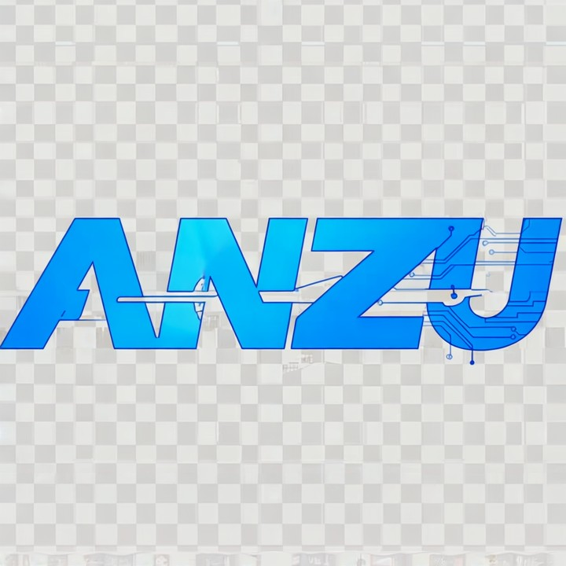
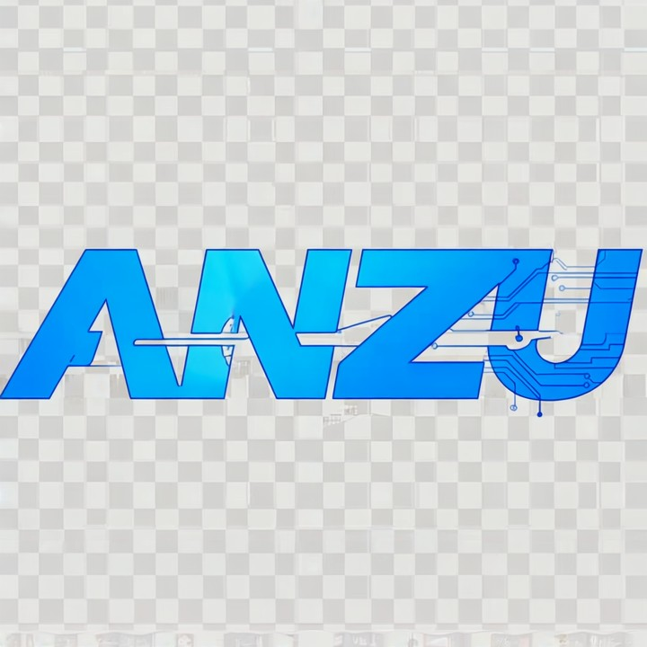
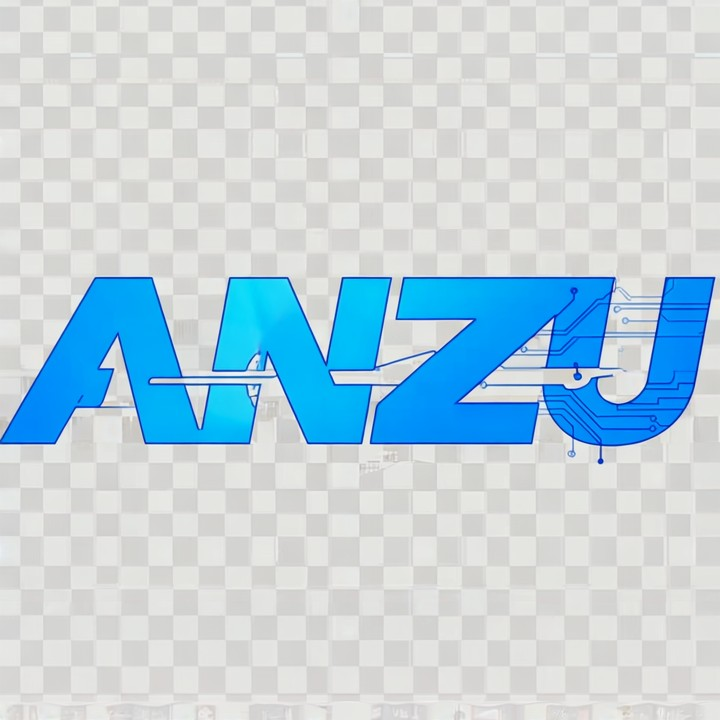
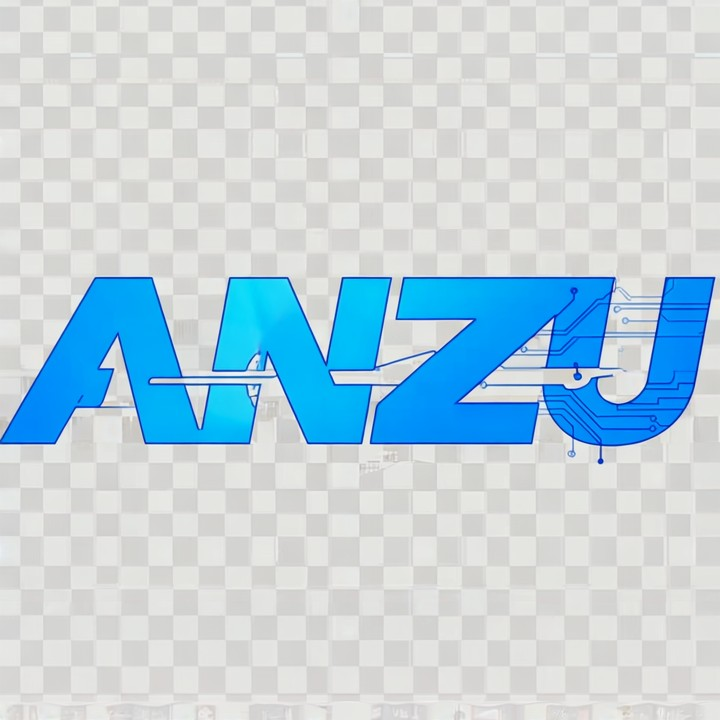

Anzu Research
 



نحن مركز أبحاث مستقل يسعى لتطوير حلول علمية متقدمة في مجال التخفي العسكري متعدد الأطياف، عبر أبحاث رائدة ونماذج مبتكرة غير مسبوقة.
We are an independent research center focused on developing advanced scientific solutions in the field of multispectral military stealth through pioneering and unprecedented research and prototypes.
تم إنجاز أبحاث مكتملة حول منتجي المستقبل: Anzu Stealth Predator (Anzu SP) و Anzu High Stealth Predator (Anzu HSP)، إضافةً إلى أربعة أبحاث حول تقنيات التخفي المتعدد الأطياف، مؤهلة للحصول على براءة اختراع دولية.
We have completed research on two future products: Anzu Stealth Predator (Anzu SP) and Anzu High Stealth Predator (Anzu HSP), in addition to four comprehensive studies on multispectral stealth technologies, eligible for international patents.
نسعى لعقد شراكات فاعلة مع مؤسسات أكاديمية وعسكرية لتطوير الأبحاث وتحويلها إلى نماذج تطبيقية قابلة للتصنيع الفعلي.
We aim to establish effective partnerships with academic and military institutions to develop research into practical, manufacturable models.
البريد الإلكتروني: ahmed.sulaimawi@anzu-research.space
Email: ahmed.sulaimawi@anzu-research.space